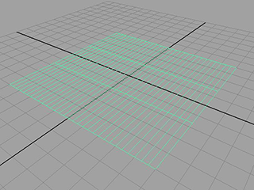

本示例介绍如何创建与场景中的对象、力及纸屑本身碰撞的逼真 nCloth 彩色纸屑。
创建彩色纸屑
创建彩色纸屑
- 选择
 。
。 - 在“多边形平面选项”(Polygon Plane Options)窗口中，选择“编辑 > 重置设置”(Edit > Reset Settings)。
- 按如下所述设定平面选项：
- “宽度”(Width)：10
- “高度”(Height)：10
- “宽度分段数”(Width divisions)：30
- “高度分段数”(Height divisions)：30
- 单击“创建”(Create)。
Maya 将以原点为中心创建平面。
- 在“多边形”(Polygons)菜单集中，选择编辑网格 > 分离(Edit Mesh > Detach)。
平面将发生分离，使每个面都成为一个新平面。
- 选择所有平面。
- 在 FX 菜单集中，选择。
- 在“属性编辑器”(Attribute Editor)中，将 nCloth 的名称更改为“彩色纸屑”。
- 在“碰撞”(Collisions)区域中，禁用“自碰撞”(Self Collide)。
- 在“动力学特性”(Dynamic Properties)区域中，按如下所述调整设置：
- “拉伸阻力”(Stretch Resistance)：2
- “压缩阻力”(Compression Resistance)：2
- “弯曲阻力”(Bend Resistance)：0
- “质量”(Mass)：0.2
- “切向阻力”(Tangential Drag)：0.5
- 播放 nCloth 模拟。
布料将以相同方式下落。若要更改这种情况，需要添加“湍流”。
改进纸屑的下落方式
向 nCloth 中添加湍流
- 转到播放范围的开始处。
- 选择彩色纸屑平面。
- 在 FX 菜单集中，选择 。
将出现“湍流选项”(Turbulence Options)窗口。
- 按如下所述设定“湍流选项”(Turbulence options)：
- “幅值”(Magnitude)：1
- “衰减”(Attenuation)：0
- “频率”(Frequency)：8
- 单击“创建”(Create)。
- 将播放范围的“结束时间”设定为 100。
- 播放模拟。
模拟的播放更加逼真，但速度也极为缓慢。
加快模拟的速度
- 选择彩色纸屑 nCloth，然后打开“属性编辑器”(Attribute Editor)。
- 在“nucleus1”选项卡中，将“空间比例”(Space Scale)属性设定为 0.1。
根据默认的动力学设置，Maya 已将这些 nCloth 视为 10x10 米的对象。将空间比例设定为 0.1，则就动力学而言，该平面成为边长 1 米的正方形。这将大大加快其模拟速度。
现在，应添加地平面和一些颜色。
向模拟中添加地平面
- 选择彩色纸屑 nCloth。
- 在“通道盒”(Channel Box)中，将“TranslateY”设定为 30。
- 在“属性编辑器”(Attribute Editor)中，选择“nucleus1”选项卡。
- 在“地平面”(Ground Plane)区域中，激活“使用平面”(Use Plane)。
设定彩色纸屑颜色
为彩色纸屑添加颜色
-
 )，然后从显示的弹出菜单中选择“指定新材质”(Assign New Material)。
)，然后从显示的弹出菜单中选择“指定新材质”(Assign New Material)。 将出现“指定新材质”(Assign New Material)窗口。
- 在“指定新材质”(Assign New Material)窗口的右侧面板中，单击 。
- 在“属性编辑器”(Attribute Editor)中，选择“rampShader1”选项卡。
- 在“颜色”(Color)区域中，选择“选定颜色”(Selected Color)旁边的方格框。
此时将显示“创建渲染节点”(Create Render Node)窗口。
- 选择“渐变”(Ramp)。
- 更改为着色且带纹理的模式（热键：6）。
- 播放模拟。
现在，彩色纸屑会像真正的彩色纸屑一样闪烁和下落。既然已有了效果的基础模拟，就可以执行多种可选步骤来增强模拟。
自定义彩色纸屑的形状（可选）
可以使用非常类似的过程创建圆形彩色纸屑。
创建圆形彩色纸屑
- )，然后选择“材质属性”(Material Attributes)。
将打开“属性编辑器”(Attribute Editor)，且“rampShader1”选项卡处于选定状态。
- 在“透明度”(Transparency)区域中，选择“选定颜色”(Selected Color)旁边的方格框。
此时将显示“创建渲染节点”(Create Render Node)窗口。
- 在“创建渲染节点”(Create Render Node)窗口的右侧面板中，单击 。
- 在“属性编辑器”(Attribute Editor)中的“渐变属性”(Ramp Attributes)下，将“类型”(Type)设定为“圆形渐变”(Circular Ramp)。
- 在“渐变属性”(Ramp Attributes)编辑器中，单击颜色渐变中心处有 X 的框，以消除绿色标记。
- 选择位于颜色渐变左下角的红色小圆。“选定颜色”(Selected Color)旁边的彩色框应发生更改。
- 单击“选定颜色”(Selected Color)旁边的彩色框。
将出现“颜色选择器”(Color Chooser)。
- 选择黑色，然后将鼠标移开以关闭“颜色选择器”(Color Chooser)。
- 在“渐变属性”(Ramp Attributes)中，将“选定位置”(Selected Position)设定为 0.45。
- 选择位于颜色渐变左上的小蓝圆。
“选定颜色”(Selected Color)旁边的彩色框应发生更改。
- 单击“选定颜色”(Selected Color)旁边的彩色框。
将出现“颜色选择器”(Color Chooser)。
- 选择白色，然后将鼠标移开以关闭“颜色选择器”(Color Chooser)。
- 在“渐变属性”(Ramp Attributes)中，将“选定位置”(Selected Position)设定为 0.5。
- 在“place2dTexture1”选项卡中的“2D 纹理放置属性”(2d Texture Placement Attributes)下，将“UV 向重复”(Repeat UV)设定为 (30, 30)。
现在，当您渲染模拟时，彩色纸屑将显示为圆形而非方形。
只有在渲染时彩色纸屑才会显示为圆形。在场景视图中，彩色纸屑显示为方形。可能需要更改为线框模式（热键：4）才能看到彩色纸屑。
nCloth 飘带
也可以使用该过程生成飘带。
创建飘带
- 选择“文件 > 新建场景”(File > New Scene)。
- 选择 。
将出现“多边形平面选项”(Polygon Plane Options)窗口。
- 选择“编辑 > 重置设置”(Edit > Reset Settings)。
- 按如下所述设定平面选项：
- “宽度”(Width)：10
- “高度”(Height)：10
- “宽度分段数”(Width divisions)：30
- “高度分段数”(Height divisions)：3
- 单击“创建”(Create)。
Maya 将以原点为中心创建平面。
 - 在“多边形”(Polygons)菜单集中，选择编辑网格 > 分离(Edit Mesh > Detach)。
平面将发生分离，从而使每个面都成为一片彩色纸屑。
- 选择平面，然后选择。
Maya 将向平面中添加多个分段。这些分段用于允许饰带发生漩涡和弯曲。
- 在“属性编辑器”(Attribute Editor)中，选择“polySubdFace1”选项卡。
- 设定下列属性：
- 细分方法(Subdivision Method)：线性(Linear)
- UV 向分段数(Divisions UV)：1, 8
- 在“FX”菜单集中，选择。
- 在“属性编辑器”(Attribute Editor)中，将 nCloth 的名称更改为“飘带”，然后按如下所述调整 nCloth 的属性值：
- 自碰撞(Self Collide)：禁用(Off)
- “质量”(Mass)：0.2
- “切向阻力”(Tangential Drag)：0.5
- “拉伸阻力”(Stretch Resistance)：2
- “压缩阻力”(Compression Resistance)：2
- “弯曲阻力”(Bend Resistance)：0
此时，可以像处理彩色纸屑一样对饰带添加湍流、颜色和地平面。